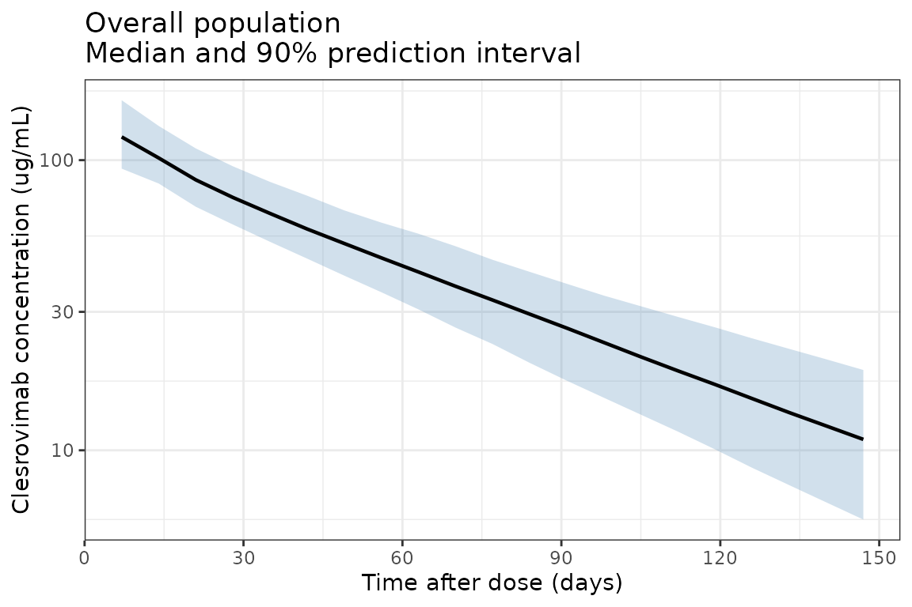
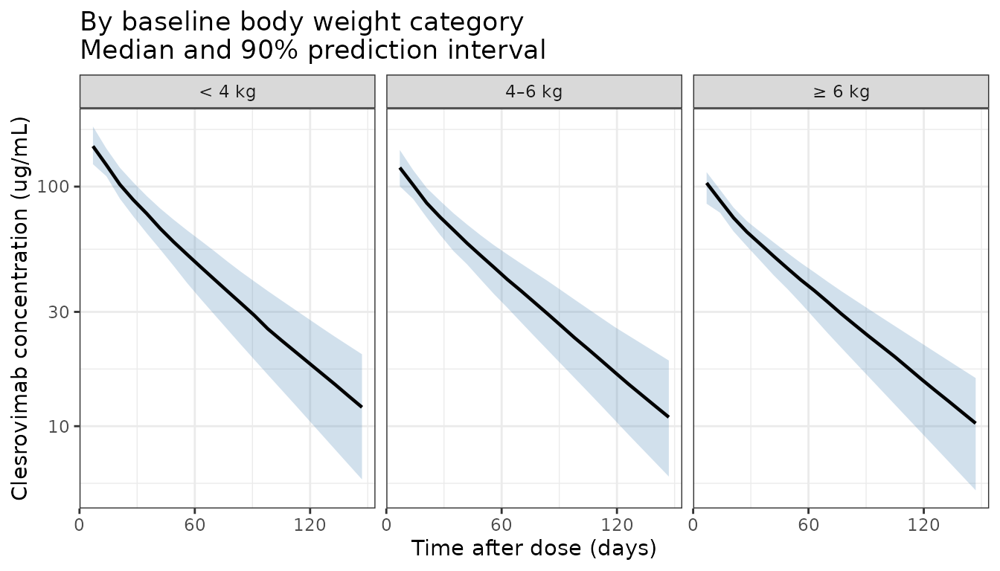

library(nlmixr2lib)
library(dplyr)
#>
#> Attaching package: 'dplyr'
#> The following objects are masked from 'package:stats':
#>
#> filter, lag
#> The following objects are masked from 'package:base':
#>
#> intersect, setdiff, setequal, union
library(ggplot2)Clesrovimab population PK simulation
Replicate Figure 2 from Hu et al. (2026): a prediction-corrected visual predictive check (VPC) showing clesrovimab serum concentrations over 150 days after a single 105 mg intramuscular dose, presented as an overall population panel and a panel stratified by baseline body weight category.
Because the original study data (5,850 PK samples from 2,942 infants across three trials) are not publicly available, this vignette simulates a virtual infant population using covariate distributions that approximate the study demographics (median age 3.02 months, median weight 5.4 kg, preterm and full-term infants). Body weight trajectories over follow-up are generated using WHO weight-for-age growth standards (combined sex, 0–10 months).
WHO weight-for-age growth curve helper
WHO weight-for-age LMS parameters for combined sex, 0–10 months (WHO Multicentre Growth Reference Study Group, 2006). The LMS formula is: weight = M × (1 + L × S × z)^(1/L)
who_lms <- data.frame(
age_mo = 0:10,
L = c(0.3487, 0.2297, 0.1970, 0.1738, 0.1553, 0.1395,
0.1257, 0.1125, 0.0998, 0.0875, 0.0756),
M = c(3.3464, 4.4709, 5.5675, 6.3762, 7.0023, 7.5105,
7.9340, 8.2970, 8.6151, 8.9014, 9.1649),
S = c(0.14602, 0.13395, 0.12385, 0.11876, 0.11535, 0.11254,
0.11056, 0.10947, 0.10868, 0.10814, 0.10765)
)
# Returns weight (kg) for a given age (months) and individual z-score
# using linear interpolation of LMS parameters between whole-month values
who_weight <- function(age_mo, z) {
age_mo <- pmax(0, pmin(age_mo, 10))
L <- approx(who_lms$age_mo, who_lms$L, xout = age_mo)$y
M <- approx(who_lms$age_mo, who_lms$M, xout = age_mo)$y
S <- approx(who_lms$age_mo, who_lms$S, xout = age_mo)$y
M * (1 + L * S * z)^(1 / L)
}Virtual population generation
Sample N = 500 virtual infants with covariate distributions approximating the study population.
set.seed(1654) # clesrovimab MK-1654
n_subj <- 500
# Gestational age: 85% full-term (37-42 wk), 15% preterm (32-37 wk)
is_preterm <- runif(n_subj) < 0.15
GA <- ifelse(is_preterm, runif(n_subj, 32, 37), runif(n_subj, 37, 42))
# Postnatal age at dosing (months); study enrolled infants <= 3 months
PNA_0 <- runif(n_subj, 0, 3)
# Individual weight z-score (fixed percentile across follow-up)
# Truncated to ±2 SD to avoid extreme weights
wt_z <- pmax(-2, pmin(2, rnorm(n_subj, 0, 1)))
# Race: approximate study demographics
race_draw <- runif(n_subj)
RACE_ASIAN <- as.integer(race_draw < 0.15)
RACE_BLACK <- as.integer(race_draw >= 0.15 & race_draw < 0.35)
RACE_MULTI <- as.integer(race_draw >= 0.35 & race_draw < 0.40)
# White/Other: race_draw >= 0.40 (reference; all indicators = 0)
pop <- data.frame(
ID = seq_len(n_subj),
GA = GA,
PNA_0 = PNA_0,
wt_z = wt_z,
RACE_ASIAN = RACE_ASIAN,
RACE_BLACK = RACE_BLACK,
RACE_MULTI = RACE_MULTI
)
# Baseline weight for stratification
pop$WT_base <- who_weight(pop$PNA_0, pop$wt_z)
pop$wt_group <- cut(
pop$WT_base,
breaks = c(0, 4, 6, Inf),
labels = c("< 4 kg", "4\u20136 kg", "\u2265 6 kg"),
right = FALSE
)Dataset construction with time-varying covariates
Observation times every 7 days from 0 to 150 days, plus the dose event at time 0.
obs_times_day <- seq(0, 150, by = 7)
# Dose records (one per subject at time 0)
d_dose <- pop |>
mutate(
TIME = 0,
AMT = 105, # mg, single IM dose
EVID = 1,
CMT = "depot",
DV = NA
)
# Observation records with time-varying WT and PNA
d_obs <- pop[rep(seq_len(n_subj), each = length(obs_times_day)), ] |>
mutate(
TIME = rep(obs_times_day, times = n_subj),
AMT = 0,
EVID = 0,
CMT = "central",
DV = NA,
PNA = PNA_0 + TIME / 30.44, # postnatal age in months
WT = who_weight(PNA, wt_z) # time-varying weight from WHO curves
)
# Dose records also need WT and PNA at time 0
d_dose <- d_dose |>
mutate(
PNA = PNA_0,
WT = who_weight(PNA_0, wt_z)
)
d_sim <- bind_rows(d_dose, d_obs) |>
arrange(ID, TIME, desc(EVID)) |>
select(ID, TIME, AMT, EVID, CMT, DV, WT, PNA, GA, RACE_ASIAN, RACE_BLACK, RACE_MULTI,
wt_group, wt_z)Load model and simulate
mod <- readModelDb("Hu_2026_clesrovimab")
# Simulate: rxSolve uses the N=500 subjects' IIV from the model ini() block.
# Setting seed for reproducibility.
set.seed(2026)
sim_out <- rxode2::rxSolve(mod, events = d_sim)
#> ℹ parameter labels from comments will be replaced by 'label()'Summarise simulation results
# Attach baseline weight group to simulation output
wt_grp_map <- d_sim |>
filter(EVID == 0, TIME == 0) |>
select(ID, wt_group) |>
distinct()
sim_plot <- sim_out |>
as.data.frame() |>
filter(time > 0) |> # exclude pre-dose time point
left_join(wt_grp_map, by = c("id" = "ID"))
# Overall population quantiles
d_overall <- sim_plot |>
group_by(time) |>
summarise(
Q05 = quantile(Cc, 0.05, na.rm = TRUE),
Q50 = quantile(Cc, 0.50, na.rm = TRUE),
Q95 = quantile(Cc, 0.95, na.rm = TRUE),
.groups = "drop"
) |>
mutate(panel = "Overall")
# Weight-stratified quantiles
d_strat <- sim_plot |>
group_by(time, wt_group) |>
summarise(
Q05 = quantile(Cc, 0.05, na.rm = TRUE),
Q50 = quantile(Cc, 0.50, na.rm = TRUE),
Q95 = quantile(Cc, 0.95, na.rm = TRUE),
.groups = "drop"
) |>
rename(panel = wt_group)Figure 2 — Overall population VPC
ggplot(d_overall, aes(x = time, y = Q50)) +
geom_ribbon(aes(ymin = Q05, ymax = Q95), fill = "steelblue", alpha = 0.25) +
geom_line(linewidth = 0.8) +
scale_y_log10(
labels = scales::label_number(drop0trailing = TRUE)
) +
scale_x_continuous(breaks = seq(0, 150, by = 30)) +
labs(
x = "Time after dose (days)",
y = "Clesrovimab concentration (\u03bcg/mL)",
title = "Overall population\nMedian and 90% prediction interval"
) +
theme_bw()
Figure 2 — Stratified by baseline body weight
ggplot(d_strat, aes(x = time, y = Q50)) +
geom_ribbon(aes(ymin = Q05, ymax = Q95), fill = "steelblue", alpha = 0.25) +
geom_line(linewidth = 0.8) +
facet_wrap(~panel, nrow = 1) +
scale_y_log10(
labels = scales::label_number(drop0trailing = TRUE)
) +
scale_x_continuous(breaks = seq(0, 150, by = 60)) +
labs(
x = "Time after dose (days)",
y = "Clesrovimab concentration (\u03bcg/mL)",
title = "By baseline body weight category\nMedian and 90% prediction interval"
) +
theme_bw()
Notes on the simulation
- Virtual population: 500 infants with GA, postnatal age, weight percentile, and race sampled to approximate the three-study population (MK-1654-002, CLEVER, SMART).
- Time-varying weight: Individual weight trajectories are generated using WHO weight-for-age growth standards (LMS method), with each subject assigned a fixed z-score (growth percentile) at enrollment.
- IIV: Simulated using the published omega^2 values for Ka (23.5% CV), CL/F (14.4% CV), and Vc/F (8.12% CV; note high shrinkage of 71.9% in the original analysis). Q/F and Vp/F had no IIV in the final model.
- Residual error: Combined proportional (14.3%) and additive (0.231 µg/mL).
- The prediction intervals reflect both inter-individual variability and residual error from the final population PK model.
Reference
- Hu Z, Hellmann F, Zang X, et al. Population Pharmacokinetics of Clesrovimab in Preterm and Full-Term Infants. Clin Pharmacol Ther. 2026;119(4):1036-1046. doi:10.1002/cpt.70199